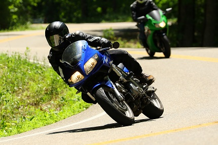

Race Info
The Isle of Man TT Race takes place, unsurprisingly, on the little island called "The Isle of Man" just northwest of the United Kingdom. The Isle of Man Tourist Trophy Race or "IoMTT" for short, has been going on since the early 1900's and is the most contriversial and popular road racing event in the world.
